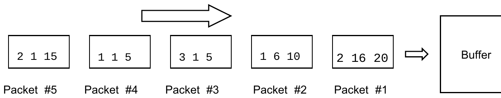

2007 ICPC World Finals · Problem G
A packet-switching network handles information in small units, breaking long messages into multiple packets before routing. Although each packet may travel along a different path, and the packets comprising a message may arrive at different times or out of order, the receiving computer reassembles the original message correctly.
The receiving computer uses a buffer memory to hold packets that arrive out of order. You must write a program that calculates the minimum buffer size in bytes needed to reassemble the incoming messages when the number of messages (N), the number of packets (M), the part of the messages in each packet, the size of each message, and the order of the incoming packets are given.
When each packet arrives, it may be placed into the buffer or moved directly to the output area. All packets that are held in the buffer are available to be moved to the output area at any time. A packet is said to “pass the buffer” when it is moved to the output area. A message is said to “pass the buffer” when all of its packets have passed the buffer.
The packets of any message must be ordered so the data in the sequence of packets that pass the buffer is in order. For example, the packet containing bytes 3 through 5 of a message must pass the buffer before the packet containing bytes 6 through 10 of the same message. Messages can pass the buffer in any order, but all packets from a single message must pass the buffer consecutively and in order (but not necessarily at the same time). Note that unlike actual buffering systems, the process for this problem can look ahead at all incoming packets to make its decisions.
The packets consist of data and header. The header contains three numbers: the message number, the starting byte number of data in the packet, and the ending byte number of data in the packet respectively. The first byte number in any message is 1.
For example, the figure below shows three messages (with sizes of 10, 20, and 5 bytes) and five packets. The minimum buffer size for this example is 10 bytes. As they arrive, packet #1 and packet #2 are stored in the buffer. They occupy 10 bytes. Then packet #3 passes the buffer directly. Packet #4 passes the buffer directly and then packet #2 exits the buffer. Finally, packet #5 passes the buffer directly and packet #1 exits the buffer.

The input file contains several test cases. The first line of each test case contains two integers N (1 ≤ N ≤ 5) and M (1 ≤ M ≤ 1000). The second line contains N integers that are the sizes of messages in bytes; the first number denotes the size of message #1, the second number denotes the size of message #2, and so on. Each of the following M lines describes a packet with three integers: the message number and the starting and ending byte numbers of data in the packet. No packet contains more 64 bytes of data.
The last test case is followed by a line containing two zeroes.
For each test case, print a line containing the test case number (beginning with 1) followed by the minimum buffer size in bytes required to reassemble the original messages. Put a blank line after the output for each test case. Use the format of the sample output.
3 3 5 5 5 1 1 5 2 1 5 3 1 5 3 5 10 20 5 2 16 20 1 6 10 3 1 5 1 1 5 2 1 15 0 0
Case 1: 0 Case 2: 10